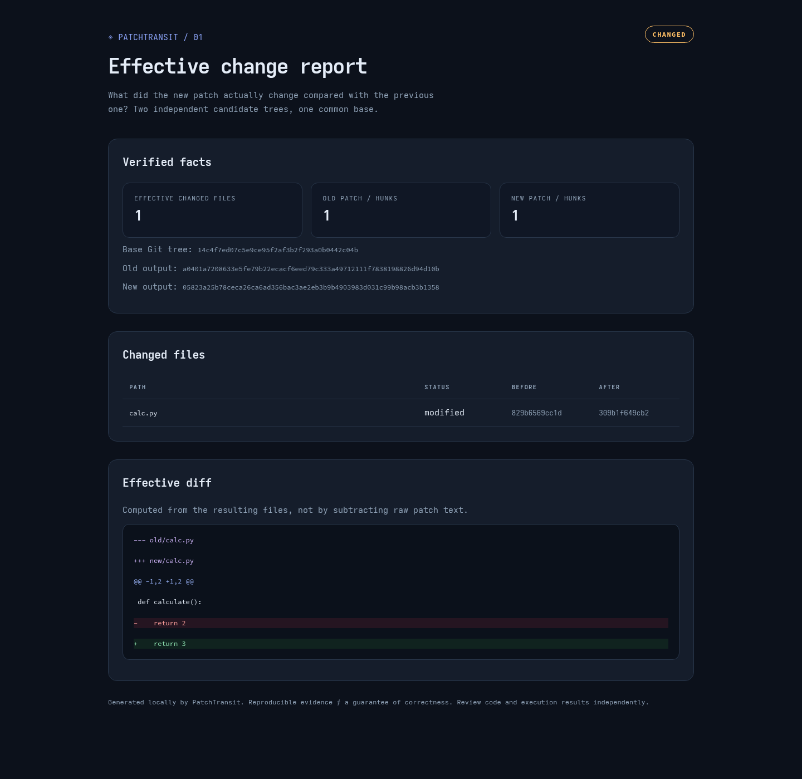

01 / Snapshot
Read an immutable base
Start from the same committed Git tree for both candidates, even when your current working directory is dirty.
Patch hunks move. Context shifts. Line numbers change. PatchTransit applies two revisions to the same Git base tree and shows what actually changed in the resulting files.
# Compare patch revisions against HEAD $ patchtransit compare \ old.patch new.patch \ --repo ./project --base HEAD \ --html report.html \ --json evidence.json # Illustrative result PatchTransit | CHANGED | 2 effective files Base tree: 8f20a… modified src/queue.py added tests/test_queue.py # Inspect the report offline $ open report.html
PatchTransit compares the resulting trees, not lines from two patch files. Your original working tree, Git index and refs stay untouched.
Start from the same committed Git tree for both candidates, even when your current working directory is dirty.
Apply each patch in its own disposable directory. If a patch does not apply cleanly, the comparison fails explicitly.
Compare files, modes, hashes and optional test results, then export a unified diff, JSON evidence and HTML report.
The generated HTML report includes changed paths, content hashes, file modes and readable unified diffs. JSON output is available for automation, with all changed files included even when the text preview is capped.
No hosted service or API key required. Reports are generated locally, and nothing is uploaded by the application.
View the sample report ↗
Track edits, new and deleted files, binary payloads, checksums and executable-mode changes where supported.
Run the same command separately on both candidates with an explicit --execute flag. Compare their exit results without storing raw logs.
Bound archive and file sizes. Refuse unsafe paths and inapplicable patches. Keep the complete JSON change manifest when a text preview is truncated.
Requires Python 3.11 or later and Git. No runtime packages beyond Python's standard library.
git clone https://github.com/simonkkz/PatchTransit.git cd PatchTransit python -m venv .venv . .venv/bin/activate python -m pip install -e . patchtransit verify changes.patch --repo . --base HEAD --html report.html
On Windows, activate the virtual environment using .venv\Scripts\Activate.ps1. Safety: Optional test execution runs code with your user permissions. PatchTransit is not a sandbox. Use a VM/container for untrusted code.